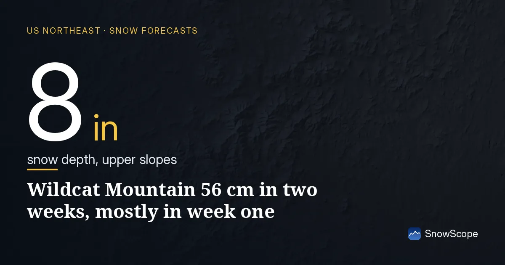
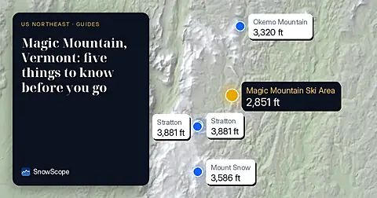

Wildcat Mountain 56 cm in two weeks, mostly in week one
Wildcat Mountain sits under 13 in (33 cm) of snow today, but our the forecast shows 56 cm arriving over the next two weeks. Most of that snow—about 29 in (74 cm)—will fall in week one, with a heavy day on 27 November.
See the live snow forecast for Wildcat Mountain in the SnowScope appSnow depth, powder alerts and the 3D map, free.
Water on the high slopes
The Northeast is drying out fast. Only 31 of 112 resorts still have measurable snow cover today, down from 38 on 20 November. As a snow hydrologist, I track this as water storage in the mountains. Right now that storage is thin: the region holds snow across just 1,050 km² of terrain. But a change is coming.
At elevations between 1,000 and 1,500 m across the region, our forecast shows 41 cm of new snow over the next 14 days (with some slopes getting up to 49 cm). That will rebuild the water reserve. Wildcat Mountain, at 1,137 m on its upper slopes, is well-placed to catch this system.
| Resort | Snow depth | New snow, 72 h | Coming, next days | Top |
|---|---|---|---|---|
| Wildcat Mountain | 5 in (13 cm) | 0 in (0 cm) | 0 in (0 cm) | 3,973 ft (1,211 m) |
| Jay Peak Resort | 1 in (3 cm) | 0 in (0 cm) | 0 in (0 cm) | 3,825 ft (1,166 m) |
| Saddleback Mountain | 8 in (20 cm) | 0 in (0 cm) | 0 in (0 cm) | 3,996 ft (1,218 m) |
| Stowe | 4 in (9 cm) | 0 in (0 cm) | 0 in (0 cm) | 3,648 ft (1,112 m) |
| Cannon Mountain | 6 in (16 cm) | 0 in (0 cm) | 0 in (0 cm) | 4,039 ft (1,231 m) |
| Waterville Valley Resort | 0 in (0 cm) | 0 in (0 cm) | 0 in (0 cm) | 3,816 ft (1,163 m) |

Week one: the main event
Three-quarters of the two-week total will come in week one (23 to 29 November). The key day is 27 November, when Wildcat Mountain is forecast to receive 22 cm. Jay Peak Resort, slightly lower, should see 19 cm that same day. This is when the system moves in and delivers.
Before 27 November the mountains stay dry. After that date, snow continues but at a slower pace: 2 to 4 cm days through to the end of week one. By 30 November, Wildcat will have stored about 29 in (74 cm) of water as snow.

Week two: scattered snow and a finish
Week two (30 November to 6 December) is less certain. The Forecasts show scattered snow every few days, but totals are smaller. Wildcat Mountain picks up another 27 cm through week two, with the second significant event arriving on 6 December (21 cm).
By then, deeper snow at high elevation should protect the base layers from new melt. Watch the temperature: early-season snow can be thin and water-rich. Where rocks poke through, you are still skiing on bare ground.

The regional picture
Across the Northeast, an area of 4,976 km² should receive 20 cm or more over the next 14 days. Only 153 km² will see 50 cm or more, mostly at the highest ridges.
Tips for skiers
- Watch 27 November closely: this is the day most resorts will see meaningful accumulation. Plan to be on higher slopes (above 1,100 m) where snow depth and water content will be greater.
- Early-season snow often sits on thin older cover or bare rock. Probe the snow carefully before committing to steep terrain. Check the official avalanche bulletin before going off-piste.
- Week one snow will be wetter and denser than mid-winter snow. Tracks cut by other skiers will be noticeable. Expect firm conditions by afternoon.
- By 6 December, a second wave may add another 10 to 20 cm to upper slopes, but uncertainty is higher. The range from low to high forecasts is 24 to 87 cm at Wildcat Mountain for the full 14 days.
- Use SnowScope to track the actual depth at each resort as snow lands. Early forecasts can shift; we will update as the systems approach.
About these numbers
Resort snow depths are the deepest snow on the resort's upper slopes on the date shown; they are estimates for an area, not a measurement at one point. Forecasts can change. Always read the official avalanche bulletin before going off-piste.
Official avalanche bulletins: Mount Washington Avalanche Center
Cite this report
For research, teaching or the press: the numbers and charts are free to reuse under CC BY 4.0 with this citation.
SnowScope (2026), Wildcat Mountain 56 cm in two weeks, mostly in week one, https://snowscope.app/blog/en/2026/11/us-northeast-2-week-snow-forecast-maps-22-november-2026.html, accessed 2026-11-22
SnowScope (Atlas Labs). (2026, November 22). Wildcat Mountain 56 cm in two weeks, mostly in week one. SnowScope snow reports. https://snowscope.app/blog/en/2026/11/us-northeast-2-week-snow-forecast-maps-22-november-2026.html
BibTeX
@misc{snowscope2026usnortheast2weeksnowfore,
author = {{SnowScope (Atlas Labs)}},
title = {Wildcat Mountain 56 cm in two weeks, mostly in week one},
year = {2026},
month = nov,
howpublished = {\url{https://snowscope.app/blog/en/2026/11/us-northeast-2-week-snow-forecast-maps-22-november-2026.html}},
note = {Published 2026-11-23 00:50 UTC; accessed 2026-11-22}
}· CC BY 4.0 · Methods, data and tools →
Wildcat Mountain: snow and temperature by height, this winter vs last (tools) →
Follow Wildcat Mountain
Free: a message when fresh snow is coming, and the forecast every morning.
More snow reports

Today's snow in the US Northeast, read, means thin early-season snow, icy mornings and soft afternoons and warm air that …

The forecast keeps the 0 °C level in the US Northeast between 0 ft (0 m) and 12,861 ft (3,920 m) for the next days. The snow line, about 984 ft …

Magic Mountain in Londonderry, Vermont: an independent hill with steep glades, an old red chairlift and thin natural snow. Five things to know, with the snow of 46 past winters.